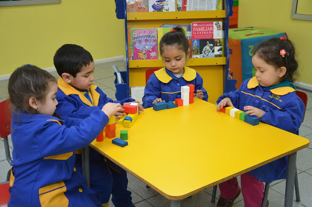
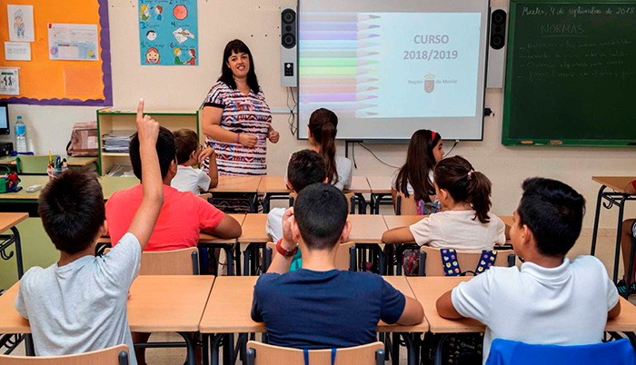
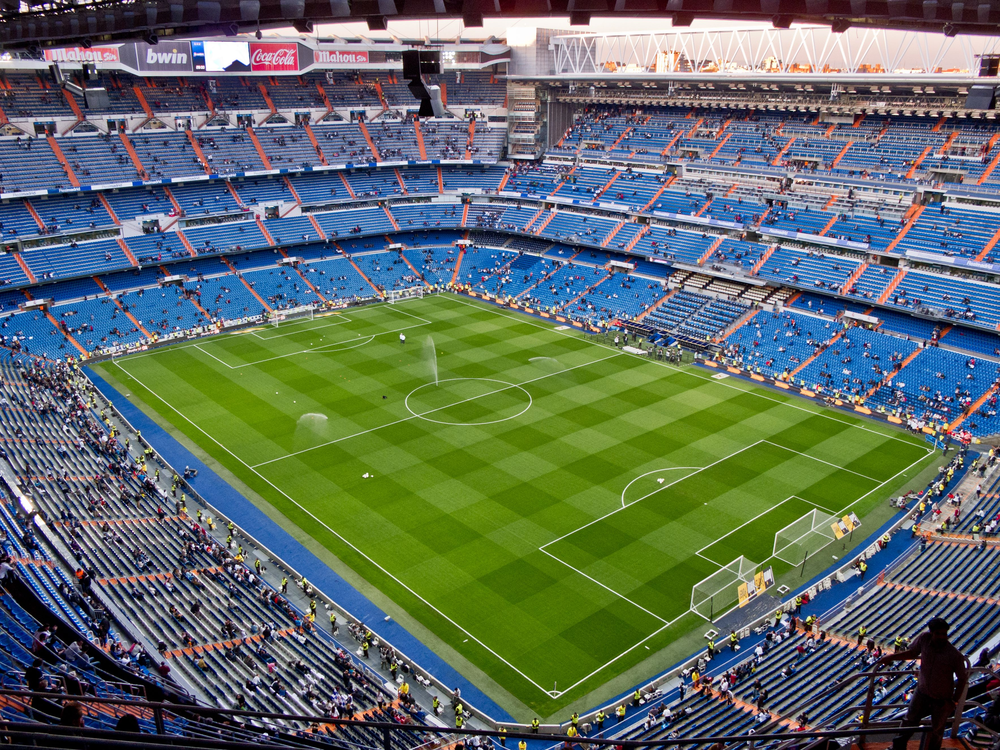
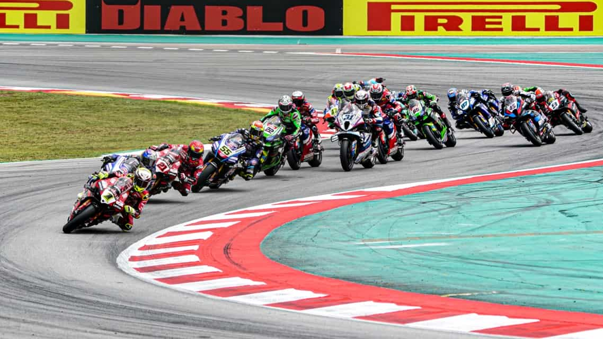
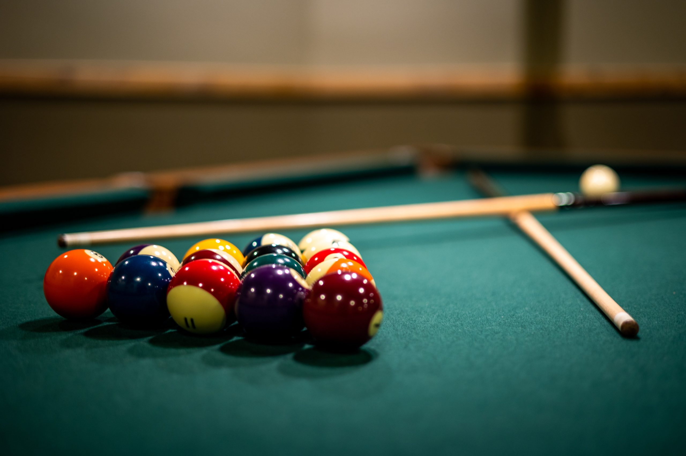

Bienvenido a mi biografía
Soy estudiante de la Fundación Kinal. Estudio desde primero básico y he elegido Informática como mi carrera profesional debido a que para mi es muy llamativo e interesante por todo lo que podemos realizar nosotros mismos y por ser una carrera que genera buenos ingresos. Ademas de esto, mi hermano mayor tambien eligió esta carrera y al ver los proyectos que han hecho en la empresa en la que labora he quedado convencido de seguirla, aunque dudando un poco entre informatica y mecanica automotriz.
Tengo 18 años, nací el 7 de julio de 2007 y vivo en la colonia Bethania desde que nací, vivo con mis padres en casa de mi abuela paterna, casa en la que vivimos 11 personas.
Soy el hijo mediano de una familia de cinco, con un hermano mayor exalumno de Kinal y una hermana menor.
Estudié la pre-primaria en el Colegio San Vicente de Paul Bethania, el cual fue clausurado el año anterior debido a una mala gestion de los dueños. En este mismo colegio ha estudiado mi hermano y mi hermana, siendo ella la unica que no pudo salir de sexto ya que el colegio ufe clausurado cuando ella estaba en tercero Primaria.
Empece a estudiar desde los 3 años debido a que cuando iban a dejar a mi hermano al colegio yo frecuentemente me quedaba llorando por querer ir a estudiar tambien, cuando estaba en preparatoria, logre ser un alumno destacado debido a mi habilidad para leer y escribir en letra de carta, siendo el elegido para leer en el acto de graduacion
Estudie la primaria en el mismo colegio, San Vicente de Paul, logre graduarme de sexto siendo abanderado desde cuarto grado.
En este lapso de tiempo hice muchas amistades las cuales hoy en dia conservo una buena parte de ellas, aunque en su mayoria de esas amistades se fueron yendo con el tiempo
Durante este periodo aprendi todas las operaciones basicas matematicas, tambien asi como desarrollar mi lectura y escritura, tambien aprender muchas cosas de otras multiples materias
Mi parte favorita eran los torneos de futbol que se hacian entre grados, en las cuales siempre mi grado quedaba entre los mejores 2 equipos
Estudie los basicos en Kinal, colegio en el que me inscribieron debido a que mi hermano es exalumno de este colegio, graduado de la carrera de perito en informatica, la misma que yo seguí
Esta ha sido una de las ultimas etapas de mi vida estudiantil, en la cual he aprendido mucho pero sobre todo he logrado hacer muy buenos amigos los cuales conservo hasta ahora, ha sido una parte muy importante en mi vida ya que he aprendido a ver la vida desde otro punto de vista, a crecer como persona y aprender de los valores del colegio
Juego futbol desde que tengo aproximadamente 6 años hasta noviembre de 2025, durante este paso logre jugar en varios equipos semiprofesionales y profesionales como lo son Municipal y Achik de tercera division.
Me desenvuelvo como lateral derecho, aunque debido a mi estilo de juego versatil puedo jugar como extremo izquierdo y mediocentro, tambien puedo jugar de portero aunque es una posicion que se me dificulta un poco, sin embarlo puedo hacerlo en futsala
Durante el tiempo que jugué futbol, mi papá siempre me acompañó a mis partidos sin importar lo lejos que fueran
Mi razon de dejar el futbol ha sido debido a que ya no encuentro la misma motivacion de antes, el deseo de llegar a ser futbolista profesional se fue con el pasar de los años y las multiples lesiones que me dificultaron poder seguir jugando a mi maximo nivel, decidí dejarlo mientras aun me sentía capaz de jugar y no cuando llegara algo que definitivamente me imposibilitara jugar de por vida.
Desde pequeño me han apasionado las motocicletas, especialmente las de carreras.
Uno de mis deseos es correr en el autodromo, deseo que no esta tan lejos de que lo pueda hacer realidad.
Mi hermano mayor ha podido correr en el autodromo y acompañarlo a sus carreras me ha inspirado para seguirle el paso.
Mi papa tambien ha sido un gran fan de las motocicletas, aprendiendo mecanica con videos de Youtube pero llegando al punto de poder armar y desarmar una motocicleta con mi compañía, tambien armando la moto de carreras que usó mi hermano en su paso por el autodromo.
La mayoria de mis familiares maternos son muy buenos corredores, aunque aun no han dado el salto de hacerlo en un autodromo, frecuentemente lo hacen en las calles en donde es aun mas peligroso y arriesgado, pero por esa misma razon requiere una habilidad muy grande, la cual siempre han demostrado tener.
Desde los 14 años me ha gustado jugar billar, solía ir a jugar con mis amigos en un billar cercano a nuestra casa, durante mucho tiempo fui perfeccionando mi tecnica y llegue a muy buen nivel como jugador.
ultimamente frecuento ir con mi hermano y mi primo quienes proponen muy buena competencia para mi persona.
Email: kmazariegos-2021255@kinal.edu.gt
Instagram: @Kmg_.OG_